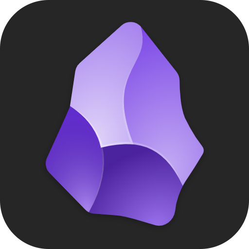

Pokazać użycie gotowych MCP z Claude Desktop,Cursor, LLM Studio, CoPilot, .Continue
Napisać Serwer MCP w C# i użyć go w Visual Studio Code
CWCo to jest Model Text Protcol (MCP)üîé?
Co to jest według metafor?
Jest to jak USB dla AI
Jest to jak REST APi dla AI
To taki UI dla AI
CWCWCWCWCW
Dlaczego MCP to rewoulcja
Jest to ustalony standard
Nie jest to jakieś kolejne API, Funkcja udostępniona przez coś co nie jest do końca akceptowane przez wszystkich
jak np. Semantic Kernel firmy Microsoft
CWCWCWCWCWSą już programy do testowania swoich MCP
CWMCP może być konteneryzowane
Zobaczmy skalę rozwiązania MCP üò≤
U≈ºyjmy wbudowanych MCP? üòé
CWDocker i MCP Toolkit
Zobaczmy jakie MCP oferuje Docker? ü§î
CWJakie mamy gotowe MCP
CWCWCWCWCWCWCWCW

CWObsidian program do notatek
Instalujemy Obsidian do tego dema üòé
CWCWKlikamy guzik i instalujemy MCP
MCP potrzebuje sekretu dostępu do localnego Obsidian
CWInstalujemy wtyczkę REST API aby lokalny Obsdian mógł gadać z MCP
CWCWCWKopiujemy sekret
CWOdpalmy teraz MCP w... CWClaude Desktop
CWCWCWCWJeśli coś nie działa to ubijamy proces Claude Desktop CWCWNapiszmy polecenie które wywoła serwer MCP
CWCWCWCWCWZobaczmy czy notatka się pojawiła w Obsidian
CWA czy mogę szukać w notatkach?
CWCWCWCWCursor
CWZobaczmy czy mogę wywołać kilka MCP na raz
CWCWCWJak to zkonfigurować w Cursor?
Pliki json ü•∏
CWOkej, ale jak mam to zrobiƒá? ü§®
CWCWCWClaude Desktop działa to automatycznie
CWCWA jak skonfigurowaƒá wiele MCP w Cursor? üòµ‚Äç üí´
CW
CWWybierzmy jakiś filmik na YouTube
CWCWCWCWCWCWCWLLM Studio
CWCWCWCWCWWybierzmy jakiś filmik na YouTube
CWCWLLM Studio skorzysta z lokalnego modelu gpt-oss-20b
CWCWCWSprawdzamy czy Obsiadian dostał notatkę
CWCWVisual Studio Code
Zaraz na wiele sposobów można mieć Chat w VS Code
CWVS Code i CoPilot
Visual Studio Code sam konfiguruje się z Docker MCP üòé
CWCWIm więcej MCP tym LLM traci więcej czasu na szukanie narzędzia
CWCWCWCWCWCWVS Code i .Continue
CWJak dodać do niego Docker MCP w YAML
CWCW
Szybki test
CWVisual Studio Code też ma swoje MCP
CWVisual Studio Code i ich extensions MCP
CWIstnieje duży wybór gotowych MCP w Visual Studio Code
CWCWCWPrzetestujmy MCP do GitHuba
CWVS Code i CoPilot
CWCWStwórzmy projekt i comitujemy go do GitHuba
CWCWCWCWZobaczmy czy mogę uzyskać dostęp do Issues z GitHuba
CWSkoro tak to na podstawie Issues z GitHuba zróbmy kod
CWCWCWNapiszmy sw√≥j serwer MCP üíª
Tylko co się nauczyliśmy patrząc na gotowe MCP? ü§î
Za dużo MCP to problem
LLM traci dużo czasu na sprawdzeniu który MCP jest najlepszy do pracy
Idea, że wszystko ma być MCP trochę upada
Trzeba się zastanowić gdzie MCP jest najbardziej potrzebny

MCP jest dla LLM, a nie dla kodu
Przenoszenie gotowego REST API do MCP jest błędem
Ironia polega na tym, że MCP ma być pisane jak dla człowieka